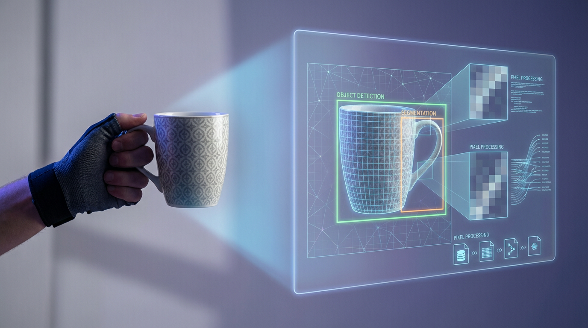

02/02/2026
Görüntü İşlemenin Temel İlkeleri
Görüntü işleme, dijital görüntülerin analiz edilerek bilgi çıkarılması sürecidir. Görüntü işlemenin temel ilkeleri, görüntülerin dijitalleştirilmesi ve çeşitli algoritmalarla analiz edilmesini içerir. Bilgisayarlı görüntüleme ve uygulamaları, sağlık, güvenlik ve otomotiv gibi çeşitli sektörlerde kullanılarak iş süreçlerini optimize eder. Nesne tanıma sistemlerinin rolü, görüntülerdeki nesnelerin doğru ve hızlı bir şekilde sınıflandırılması ve tanınmasını sağlamaktır. Bu sistemler, artırılmış gerçeklik ve otomatik sürüş gibi ileri teknolojilerin belkemiğini oluşturur. Görüntü işlemenin geleceği, yapay zekâ ve makine öğrenimi ile daha da gelişecek. Bu alanda yenilikçi çözümler sunan kişiler, hızla değişen teknoloji dünyasında ön plana çıkacaktır. Makalemizde öne çıkan öneriler, bu alanda kariyer yapmak isteyenler için verimli yollar ve güncel teknolojilerle ilgili bilgi edinmeyi teşvik etmektedir.

Görüntü İşlemenin Temel İlkeleri
Görüntü işleme, dijital görüntülerin algılanması, analizi ve manipülasyonu ile ilgilenen bir bilgisayar bilimleri dalıdır. Bu teknoloji, bilgisayarların dijital görüntüleri tıpkı insan gözü gibi analiz etmesine olanak tanır. Görüntü işleme teknolojisi, birçok sektörde, özellikle sağlık, güvenlik ve otomotiv gibi alanlarda kullanılmaktadır. Ayrıca, görüntü işleme süreçleri, genellikle giriş görüntüsünün alınması, ön işleme aşaması, özellik çıkarımı ve sonucunda görüntünün analizi gibi adımlardan oluşur.
Görüntü İşlemenin Başlıca Kullanım Alanları
Sağlık sektöründe tıbbi görüntüleme ve teşhis süreçlerinin iyileştirilmesi, güvenlik kamera sistemlerinde nesne tanıma ve yüz tanıma teknolojileri, otonom araçlarda çevre algılama ve arazi analizi, sosyal medya platformlarında görsel içerik düzenleme ve filtreleme, tarımda bitki hastalıklarının erken teşhisi ve ürün takibi, sanayi sektöründe kalite kontrol ve hatalı ürün tespiti, meteorolojide hava durumu analizleri ve görüntü tabanlı tahminler başlıca kullanım alanlarıdır.
Görüntü işleme teknolojisi, dijital görüntülerin bilgi taşıyan birimler olarak işlenmesinde kritik bir rol oynar. Özellikle yapay zekâ ve makine öğrenimi teknikleri ile entegre edilmesi, görüntü işleme uygulamalarını daha da etkin ve güçlü hale getirmiştir. Bu teknolojinin gelişimi, endüstrilerde verimliliği artırma ve hataları en aza indirgeme potansiyeline sahiptir. Ayrıca, günlük yaşamda daha güvenli ve konforlu çözümler sunmak için görüntü işleme teknolojisine duyulan ihtiyaç giderek artmaktadır.
Bilgisayarlı Görü ve Uygulamaları
Görüntü işleme, dijital dünyada önemli bir yere sahiptir ve teknolojinin birçok alanında kritik roller üstlenir. Bilgisayarlı görü ile, makineler ve bilgisayarlar görsel bilgiyi algılayabilir, analiz edebilir ve anlamlandırabilir. Bu teknoloji, medya, tıp, güvenlik ve daha birçok sektörde yaygın olarak kullanılmaktadır. Özellikle endüstride görüntü işleme uygulamaları, üretim süreçlerini optimize ederken hata oranını düşürmekte ve kalite kontrol süreçlerini iyileştirmektedir.
Bilgisayarlı görü teknolojisinin tarihçesi 1960'lara kadar uzanır. İlk araştırmalar, görüntülerin dijital formatta işlenmesi üzerine odaklanmıştır. 1980'lerden itibaren ise daha sofistike algoritmalar geliştirilmiş ve bilgisayarlı görü sistemleri ticari kullanım alanına girmiştir. Bu gelişmeler, yazılım ve donanım teknolojilerindeki ilerlemelerle hız kazanmıştır. Günümüzde, makine öğrenimi ve yapay zekâ ile entegre edilmiş endüstride görüntü işleme sistemleri, daha akıllı ve daha hızlı sonuçlar üretmektedir.
Bilgisayarlı Görü İşlem Adımları
Görüntü Elde Etme: İlk adım, kamera veya sensör kullanarak dijital görüntülerin yakalanmasıdır. Ön İşleme: Gürültüyü azaltma ve kontrast ayarları gibi işlemlerle görüntü kalitesini artırma. Segmentasyon: Görüntüdeki önemli nesnelerin veya bölgelerin belirlenmesi. Özellik Çıkartma: Çıkarılan nesnelere ait özelliklerin tanımlanması. Desen Tanıma: Makine öğrenimi algoritmalarıyla verilerin analiz edilmesi. Karar Verme: İşlenmiş verilerden anlamlı sonuçlar çıkarma. Sonuç Görselleştirme: Elde edilen bilgilerin kullanıcılara sunulması.
Bilgisayarlı görü, modern teknolojinin vazgeçilmez uygulamalarından biridir. İlerleyen yıllarda bu teknolojinin daha da gelişerek günlük hayatımızda daha fazla yer edeceği tahmin edilmektedir. Özellikle görüntü işleme alanındaki yenilikler, birçok sektörü kökten değiştirirken, kullanıcı deneyimini ve işlem verimliliğini artırmaktadır.
Bilgisayarlı Görüde Kullanılan Araçlar
Bilgisayarlı görü alanında kullanılan araçlar, teknolojinin etkililiğini ve doğruluğunu ön plana çıkarmaktadır. Genellikle yapay zekâ ve makine öğrenimi tabanlı algoritmalar, bilgisayarlı görü sistemlerinde önemli rol oynar. OpenCV, TensorFlow ve Keras gibi yazılım kütüphaneleri, görüntü işleme projelerinde sıklıkla tercih edilmektedir. Ayrıca, spesifik uygulamalar için özel tasarlanmış sensörler ve kameralar önemli araçlar arasında yer alır, bu sayede daha hassas ve doğru sonuçlar elde edilebilmektedir.
Nesne Tanıma Sistemlerinin Rolü
Nesne tanıma sistemleri, modern görüntü işleme teknolojilerinin en çarpıcı uygulamalarından biridir. Bu sistemler, dijital görüntüler veya videolar gibi görsel veriler üzerinden belirli nesneleri tanımlamak ve sınıflandırmak için kullanılır. Başta yapay zekâ görüntü analizi olmak üzere, gelişmiş algoritmalar ve derin öğrenme teknikleri nesne tanıma sistemlerinin etkinliğini artırmaktadır. Ayrıca, bu sistemler birçok endüstride, özellikle güvenlik ve otomotiv sektörlerinde, kritik bir rol oynamaktadır.
Nesne Tanıma Sisteminin Avantajları
Otomatikleştirilmiş denetim ve izleme yetenekleri sunar. Gerçek zamanlı veri işleme kapasitesine sahiptir. Yüksek doğruluk oranı ile insan hatalarını en aza indirir. Metal dedektörleri veya biyometrik sistemler gibi güvenlik cihazlarına entegre edilebilir. Veri analizi süreçlerini hızlandırarak karar verme süreçlerini optimize eder. Özelleştirilebilir algoritmalar sayesinde çeşitli endüstri ihtiyaçlarını karşılayabilir. Maliyet tasarrufu ve operasyonel verimlilik sağlar.
Görüntü işleme konusunda nesne tanıma sistemlerinin kullanımı, giderek artan bir öneme sahiptir. Özellikle sağlık hizmetlerinde, tıbbi görüntülerin analizinde teşhis sürecini hızlandırır ve doğruluğunu artırır. Ayrıca, tarım sektöründe bitki hastalıklarının erken teşhisi için büyük bir potansiyel taşır. Bu sistemlerin sunduğu gelişmiş görüntü analizi yetenekleri hem sanayi hem de günlük hayatın birçok alanında devrim niteliğinde çözümler sunmaktadır.
Görüntü İşleme Geleceği ve Öneriler
Görüntü işleme teknolojisi, hızla gelişen ve sürekli değişen bir alandır. Gelecekteki teknolojik ilerlemeler ve yenilikler, görüntü işlemenin daha da önemli ve yaygın hale gelmesine yol açacaktır. Yapay zekâ ve makine öğrenimi ile birleşen görüntü işleme sistemleri, daha doğru ve verimli sonuçlar elde etmemizi sağlayacaktır. Özellikle sağlık, otomotiv ve güvenlik gibi sektörlerde, görüntü işlemenin önemi giderek artmaktadır.
Görüntü İşlemeyi Geliştirmek İçin Adımlar
Yapay zekâ ve makine öğrenimi algoritmalarına yatırım yaparak teknolojiyi desteklemek. Veri toplama süreçlerini optimize etmek ve kaliteyi artırmak. Görüntü analiz yazılımlarını güncel tutarak verimliliği maksimize etmek. Büyük veri yönetimini güçlendirip, görüntü işleme projelerinde kullanmak. Multidisipliner ekiplerle entegrasyon sağlayarak yenilikçi çözümler geliştirmek. Endüstrideki en iyi uygulamaları araştırmak ve adapte etmek. Teknolojik altyapıyı sürekli güncelleyerek yeni nesil donanımlar ile uyum sağlamak.
Görüntü işlemenin geleceği, teknolojik yenilikler ve endüstri ihtiyaçları tarafından şekillendirilecektir. Bu süreçteki en önemli etkenlerden biri de veri güvenliğidir. Kullanıcı verilerinin korunması, etik standartlara uyulması hem hukuki hem de toplumsal açıdan büyük önem taşımaktadır. Ayrıca, yeni nesil uygulamalarla birlikte artan veri miktarı, daha ileri görüntü işleme çözümlerinin geliştirilmesini gerektirmektedir.
Sık Sorulan Sorular
Görüntü işlemenin temel amacı nedir? Görüntü işlemenin temel amacı, dijital görüntülerin kalitesini artırmak, bilgiyi daha anlamlı hale getirmek ve bu görüntülerden veri çıkarmaktır.
Bilgisayarlı görü nedir ve ne gibi uygulamaları vardır? Bilgisayarlı görü, bir bilgisayarın dijital görüntüleri anlayabilmesine ve yorumlayabilmesine olanak tanıyan teknolojidir ve sağlık, güvenlik, otomotiv gibi pek çok alanda kullanılır.
Nesne tanıma sistemlerinin temel işlevi nedir? Nesne tanıma sistemleri, görüntülerdeki nesneleri tanımlamak ve sınıflandırmak amacıyla geliştirilmiştir. Bu sistemler, güvenlik kameraları, otonom araçlar ve geliştirilmiş etkileşimli uygulamalarda yaygın olarak kullanılır.
Görüntü işleme alanında yaygın olarak kullanılan teknikler nelerdir? Filtreleme, histogram dengeleme, kenar algılama ve segmentasyon bulunur.
Görüntü işlemenin geleceği hakkında hangi eğilimler öngörülmektedir? Yapay zekâ destekli çözümler, daha hızlı ve gerçek zamanlı işlerlik sağlayan algoritmaların gelişmesi ve daha geniş sektörlerde uygulama alanının artması beklenmektedir.
Görüntü işlemede derin öğrenme nasıl bir rol oynar? Derin öğrenme, görüntü işlemeyi daha akıllı ve etkili hale getirir. Özellikle konvolüsyonel sinir ağları (CNN), nesne tanıma ve görüntü sınıflandırmada önemli roller oynamaktadır.
Görüntü işlemenin sağlık sektöründeki önemi nedir? Görüntü işleme, sağlık alanında tanı süreçlerini hızlandırarak ve doğruluğunu artırarak, hastalık teşhisi için büyük önem taşımaktadır. Örnek olarak, tıbbi görüntüleme sistemlerinde tümör tespiti gösterilebilir.
Görüntü işleme için hangi yazılım araçları kullanılmaktadır? Kullanılan yazılım araçları arasında OpenCV, MATLAB, TensorFlow ve Keras bulunmaktadır.
Görüntü işleme uygulamalarının güvenlik alanındaki rolü nedir? Güvenlik alanında yüz tanıma, hareket algılama ve olay tespiti gibi işlevlerle güvenlik sistemleri için kritik bir bileşendir.